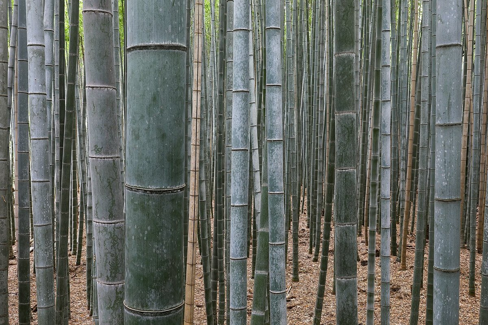
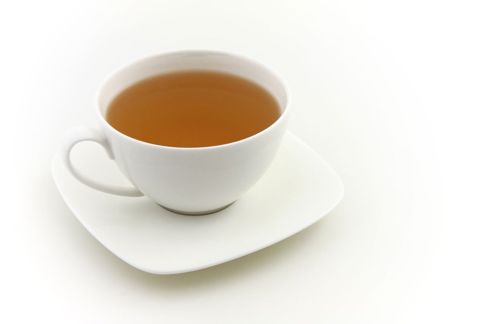
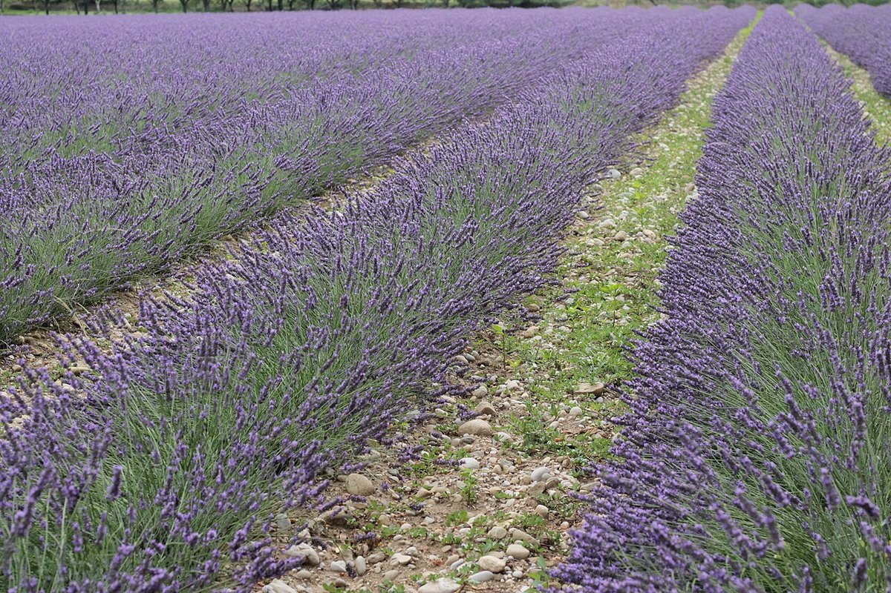

掲載写真はフリー素材のイメージで、実際の店舗・施術ではありません(他地域で撮影、または撮影地不明のものを含みます)
店舗概要
| 店名 | Eyelash Beauty Salon Ratu |
|---|---|
| 業種 | まつげ・ビューティーサロン |
| 所在地 | 宮崎県延岡市西階町1丁目4447-8 |
| 電話 | 080-1744-3329 |
| https://www.instagram.com/ratu20090211 | |
| 営業時間 | 準備中(お問い合わせください) |
| 定休日 | 準備中(お問い合わせください) |
| スタッフ | 準備中(お問い合わせください) |
| 予約方法 | 準備中(お問い合わせください) |
| 店名の意味・由来 | 準備中(お問い合わせください) |

目を閉じて、ひと息つく場所(仮)
まつげのサロンは、目を閉じて過ごす時間のある場所。
そこから「静けさ」「余白」「やわらかな光」を主題にしたサイトのイメージを、制作側で考えました。
このコンセプトは制作側の提案であり、お店の公式な方針・理念ではありません。
お店の考えや施術の内容については、お電話またはInstagramでお尋ねください。

掲載写真はフリー素材のイメージで、実際の店舗・施術ではありません(他地域で撮影、または撮影地不明のものを含みます)